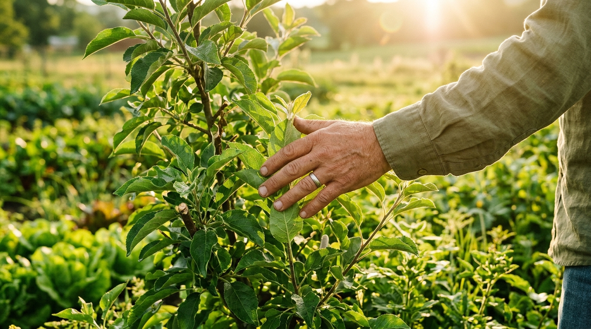

Impactos do Descarte
Dentre as consequências associadas ao descarte destes resíduos orgânicos estão aspectos ambientais e econômicos, podendo propiciar o desenvolvimento de vetores patogênicos; aumento no custo de limpeza e manutenção de áreas públicas e privadas; poluição visual e corroborar com o aumento de riscos de enchentes; além de prejudicar a ciclagem de nutrientes através da compostagem e outras práticas sustentáveis.